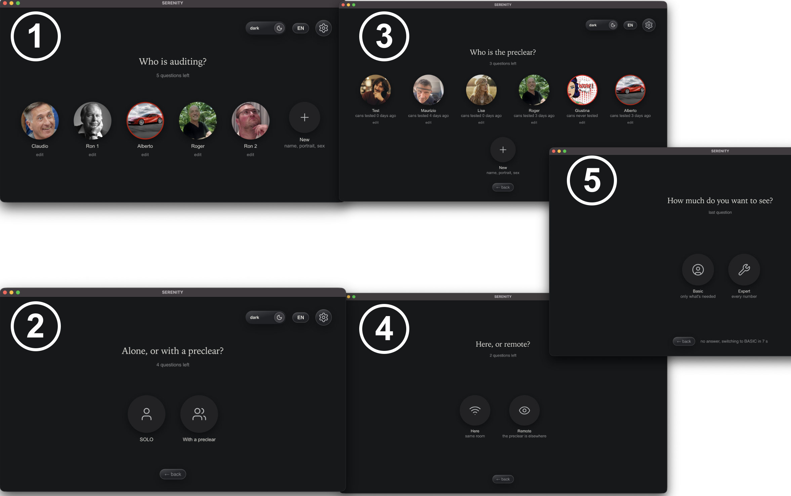
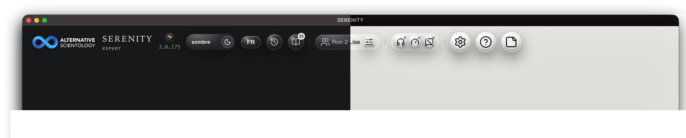
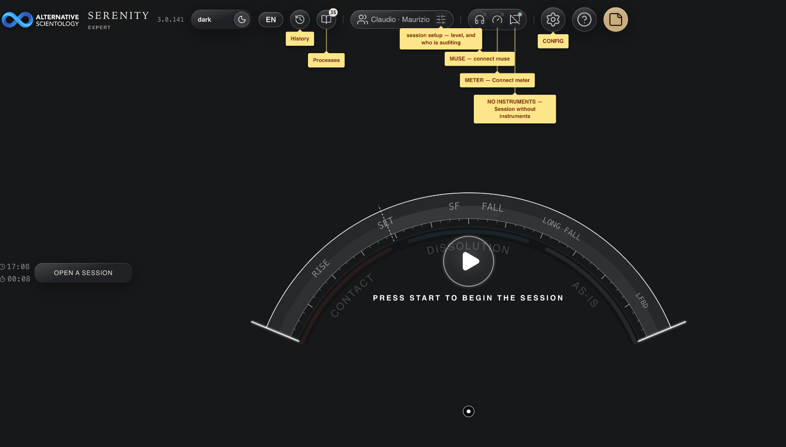
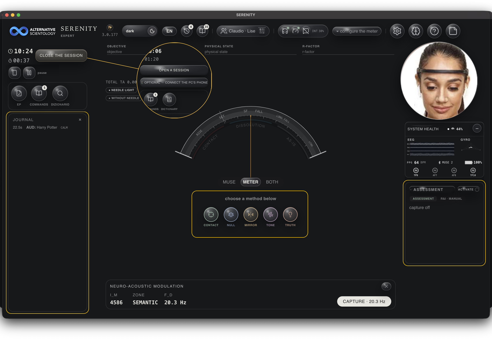
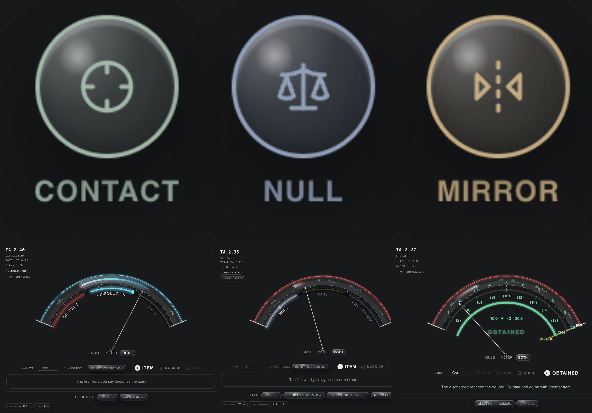
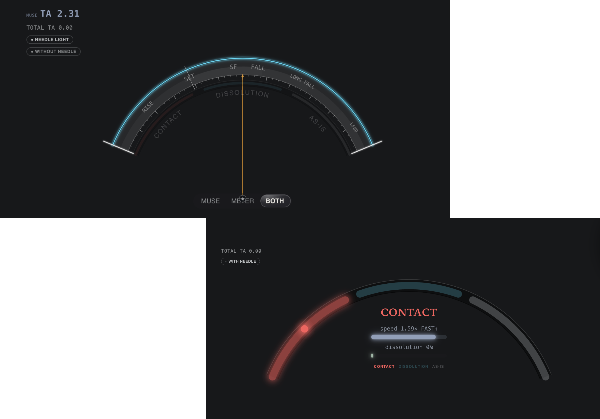
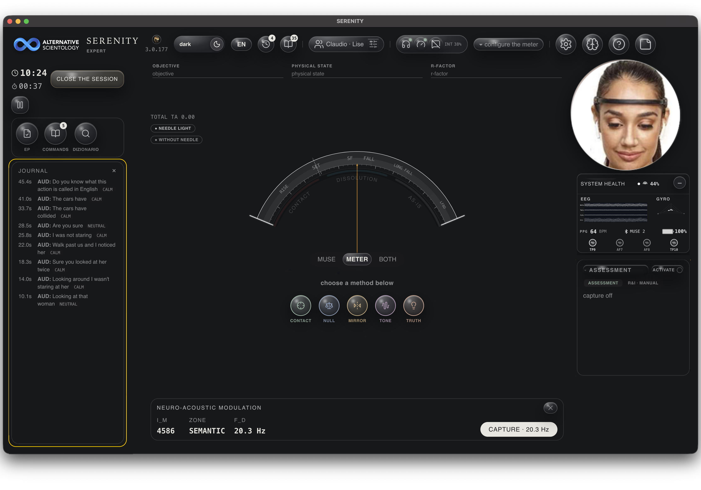
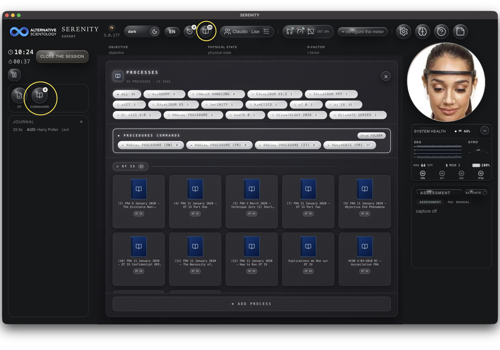
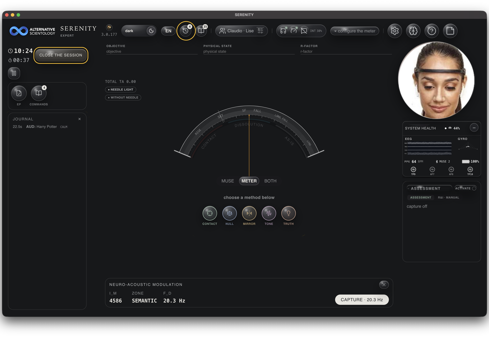
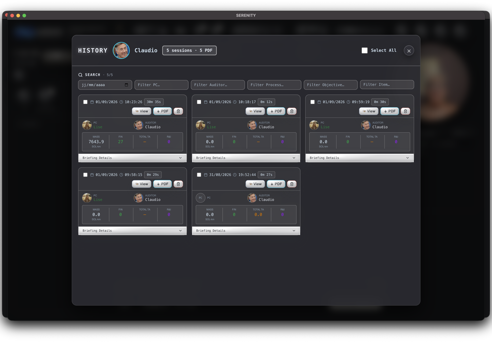

SERENITY
Mode d'emploi — pas de théorie ici, juste les gestes : quel bouton, ce qui apparaît, comment fermer. Manuale d'uso — nessuna teoria qui, solo i gesti: quale pulsante, cosa appare, come chiudere. User manual — no theory here, just the gestures: which button, what appears, how to close it.
1. Premier lancement1. Primo avvio1. First launch
-
Qui audite ?Chi audita?Who is auditing?
— clique sur ton profil, ou sur
+ Newpour en créer un (nom, portrait, sexe). clicca sul tuo profilo, o su+ Newper crearne uno (nome, ritratto, sesso). click your profile, or+ Newto create one (name, portrait, sex). - Seul, ou avec un préclair ?Da solo, o con un preclear?Alone, or with a preclear? — SOLO (tu es aussi le sujet) ou Avec un préclair (une autre personne, avec sa propre photo/nom). SOLO (sei anche tu il soggetto) oppure Con un preclear (un'altra persona, con la sua foto/nome). SOLO (you are also the subject) or With a preclear (another person, with their own photo/name).
-
Qui est le préclair ?Chi è il preclear?Who is the preclear?
— clique sur son profil, ou
+ Newpour en créer un. N'apparaît qu'« Avec un préclair » à l'étape précédente — en SOLO, cette question n'existe pas. clicca sul suo profilo, o+ Newper crearne uno. Compare solo scegliendo "Con un preclear" al passo precedente — in SOLO questa domanda non esiste. click their profile, or+ Newto create one. Only appears after choosing "With a preclear" at the previous step — in SOLO this question doesn't exist. - Ici, ou à distance ?Qui, o a distanza?Here, or remote? — Ici (auditor et préclair dans la même pièce) ou À distance (chacun sur son écran). Même condition que l'étape précédente : n'existe pas en SOLO. Qui (auditor e preclear nella stessa stanza) oppure A distanza (ognuno sul suo schermo). Stessa condizione del passo precedente: non esiste in SOLO. Here (auditor and preclear in the same room) or Remote (each on their own screen). Same condition as the previous step: doesn't exist in SOLO.
- Combien veux-tu voir ?Quanto vuoi vedere?How much do you want to see? — Basique (juste l'essentiel) ou Expert (tous les chiffres). Sans réponse en 7 secondes, ça part sur Basique. Basico (solo l'essenziale) o Esperto (tutti i numeri). Senza risposta in 7 secondi, parte su Basico. Basic (just what's needed) or Expert (every number). No answer in 7 seconds switches to Basic.
Ce que Basique cache (toujours réactivable depuis CONFIG) : le panneau MNA, le panneau Santé Système, et les chiffres exacts secondaires (Total TA cumulé, vitesse) — l'aiguille/les bandes et la lecture du moment restent visibles dans les deux niveaux. Cosa nasconde Basico (sempre riaccendibile da CONFIG): il pannello MNA, il pannello Santé Système, e i numeri esatti secondari (Total TA cumulativo, velocità) — l'ago/le bande e la lettura del momento restano visibili in entrambi i livelli. What Basic hides (always re-enabled from CONFIG): the MNA panel, the Santé Système panel, and secondary exact numbers (cumulative Total TA, velocity) — the needle/bands and the current reading stay visible at both levels.

2. L'écran principal2. Schermata principale2. Main screen
La barre du haut, de gauche à droite : La barra in alto, da sinistra a destra: The top bar, left to right:
| Bouton | Fait quoi |
|---|---|
| Pulsante | Cosa fa |
| Button | What it does |
| thème / langue | clair ↔ sombre, et la langue de l'interface (5 langues). |
| tema / lingua | chiaro ↔ scuro, e la lingua dell'interfaccia (5 lingue). |
| theme / language | light ↔ dark, and the interface language (5 languages). |
| 🕐 Historique | toutes tes séances passées — voir §9. |
| 🕐 Storico | tutte le tue sedute passate — vedi §9. |
| 🕐 History | all your past sessions — see §9. |
| 📖 Journal | bascule le panneau qui affiche ce qui a été dit/tapé pendant la séance — voir §6. |
| 📖 Diario | attiva/disattiva il pannello che mostra ciò che è stato detto/scritto durante la seduta — vedi §6. |
| 📖 Journal | toggles the panel showing what was said/typed during the session — see §6. |
| Processus | charge un fichier de commandes/procédure — voir §7. |
| Processi | carica un file di comandi/procedura — vedi §7. |
| Processes | loads a commands/procedure file — see §7. |
| profil · seul/préclair | rouvre les questions du premier lancement (5, ou 3 en SOLO — voir §1). |
| profilo · solo/preclear | riapre le domande del primo avvio (5, o 3 in SOLO — vedi §1). |
| profile · alone/preclear | reopens the first-launch questions (5, or 3 in SOLO — see §1). |
| MUSE / METER / SANS INSTRUMENTS | connecte le casque MUSE, le Theta‑Meter USB, ou choisit de travailler sans aucun des deux. En Basique, ces trois boutons se replient en un seul point d'état — un clic dessus les déplie, et ils restent dépliés. |
| MUSE / METER / SENZA STRUMENTI | collega il casco MUSE, il Theta‑Meter USB, oppure sceglie di lavorare senza nessuno dei due. In Basico questi tre pulsanti si riducono a un solo pallino di stato — un clic li apre, e restano aperti. |
| MUSE / METER / NO INSTRUMENTS | connects the MUSE headset, the USB Theta‑Meter, or chooses to work with neither. In Basic, these three buttons collapse into a single status dot — one click expands them, and they stay expanded. |
| ⚙️ CONFIG | réglages avancés (niveau d'affichage, calibration, etc.). |
| ⚙️ CONFIG | impostazioni avanzate (livello di visualizzazione, calibrazione, ecc.). |
| ⚙️ CONFIG | advanced settings (display level, calibration, etc.). |
| ? Guide | cette page. |
| ? Guida | questa pagina. |
| ? Guide | this page. |
| 🗒️ Help | affiche/cache un post-it d'explication sous chaque bouton de l'écran actuel — différent de Guide, qui ouvre le manuel entier. |
| 🗒️ Help | mostra/nasconde un post-it di spiegazione sotto ogni pulsante della schermata attuale — diverso da Guida, che apre il manuale intero. |
| 🗒️ Help | shows/hides an explanation post-it under every button on the current screen — different from Guide, which opens the whole manual. |


3. Démarrer une séance3. Avviare una seduta3. Starting a session
En bas à gauche : Ouvrir une séance. Un clic, et le cadran apparaît au centre — cinq cercles, un par méthode. In basso a sinistra: Apri una seduta. Un clic, e il quadrante appare al centro — cinque cerchi, uno per metodo. Bottom left: Open a session. One click, and the dial appears in the centre — five circles, one per method.

4. Les 5 méthodes4. I 5 metodi4. The 5 methods
Un seul clic sur un cercle l'arme. Pour fermer sans valider : le bouton FERMER en haut du cadran, à tout moment. Un solo clic su un cerchio lo arma. Per chiudere senza validare: il pulsante CHIUDI in alto sul quadrante, in qualsiasi momento. One click on a circle arms it. To close without validating: the CLOSE button at the top of the dial, at any time.
| Cercle | Un clic dessus | Se ferme |
|---|---|---|
| Cerchio | Un clic sopra | Si chiude |
| Circle | One click on it | Closes |
| CONTACT | arme le cadran ; l'aiguille/les bandes réagissent en direct à ce qui est dit. | automatiquement quand la lecture est faite, ou FERMER. |
| CONTACT | arma il quadrante; l'ago/le bande reagiscono in diretta a quello che viene detto. | automaticamente quando la lettura è fatta, oppure CHIUDI. |
| CONTACT | arms the dial; the needle/bands react live to what's said. | automatically once the read is done, or CLOSE. |
| NULL | arme le cycle NULL → RISE → CLEAR READ, avec ses propres étapes affichées. En Basique, la demande de mock-up reste simple ("demande un mock-up") ; en Expert elle nomme aussi l'issue technique ("NE RECHARGE PAS"). | en suivant les étapes jusqu'au bout, ou FERMER. |
| NULL | arma il ciclo NULL → RISE → CLEAR READ, con le sue tappe mostrate. In Basico la richiesta di mock-up resta semplice ("chiedi un mock-up"); in Esperto nomina anche l'esito tecnico ("NON RICARICA"). | seguendo le tappe fino in fondo, oppure CHIUDI. |
| NULL | arms the NULL → RISE → CLEAR READ cycle, with its own steps shown. In Basic, the mock-up request stays plain ("ask for a mock-up"); in Expert it also names the technical outcome ("NO RECHARGING"). | by following the steps through, or CLOSE. |
| MIRROR | arme le doublement (instantané → doublé → effacé) ; propre à SERENITY. | quand le doublement est confirmé, ou FERMER. |
| MIRROR | arma il raddoppio (istantaneo → doppio → cancellato); proprio di SERENITY. | quando il raddoppio è confermato, oppure CHIUDI. |
| MIRROR | arms the doubling (instant → doubled → erased); specific to SERENITY. | once the doubling is confirmed, or CLOSE. |
| TONE | arme la remontée de ton : bouton "mène-le au ton 40" (répétable), puis "ton 40 atteint". | quand "ton 40 atteint" est cliqué, ou FERMER. |
| TONE | arma la risalita di tono: pulsante "portalo a tono 40" (ripetibile), poi "tono 40 raggiunto". | quando si clicca "tono 40 raggiunto", oppure CHIUDI. |
| TONE | arms the tone raise: "raise it to tone 40" button (repeatable), then "tone 40 reached". | once "tone 40 reached" is clicked, or CLOSE. |
| TRUTH | demande de localiser un ITEM, propose un candidat, cherche un ITEM supplémentaire ; propre à SERENITY. | en clôturant le R/I proposé, ou FERMER. |
| TRUTH | chiede di localizzare un ITEM, propone un candidato, cerca un ITEM supplementare; proprio di SERENITY. | chiudendo l'R/I proposto, oppure CHIUDI. |
| TRUTH | asks to locate an ITEM, proposes a candidate, looks for a further ITEM; specific to SERENITY. | by closing the proposed R/I, or CLOSE. |

5. Avec / sans aiguille5. Con / senza ago5. With / without needle
Sous le cadran (CONTACT/NULL uniquement — MIRROR/TONE/TRUTH ont leur propre affichage), un bouton bascule entre l'AIGUILLE classique et trois bandes de couleur (CONTACT / DISSOLUTION / AS-IS) avec une barre de vitesse. Les bandes respirent doucement même à l'arrêt — c'est normal, pas un signal. Sotto il quadrante (solo CONTACT/NULL — MIRROR/TONE/TRUTH hanno la propria visualizzazione), un pulsante alterna tra l'AGO classico e tre bande di colore (CONTACT / DISSOLUZIONE / AS-IS) con una barra di velocità. Le bande respirano piano anche da ferme — è normale, non è un segnale. Below the dial (CONTACT/NULL only — MIRROR/TONE/TRUTH have their own display), a button toggles between the classic NEEDLE and three colour bands (CONTACT / DISSOLUTION / AS-IS) with a speed bar. The bands breathe gently even at rest — that's normal, not a signal.

6. Journal6. Diario6. Journal
Le bouton 📖 dans la barre du haut ouvre/ferme un panneau qui liste ce qui a été tapé ou dit pendant la séance. Il ne montre que ça (pas les réactions de l'aiguille ni les messages système) — tout le reste apparaît dans le rapport PDF final. Il pulsante 📖 nella barra in alto apre/chiude un pannello che elenca ciò che è stato scritto o detto durante la seduta. Mostra solo quello (non le reazioni dell'ago né i messaggi di sistema) — tutto il resto compare nel rapporto PDF finale. The 📖 button in the top bar opens/closes a panel listing what was typed or said during the session. It shows only that (not needle reactions or system messages) — everything else appears in the final PDF report.

7. Processus (commandes)7. Processi (comandi)7. Processes (commands)
- Clique sur Processus dans la barre du haut : une liste de fichiers apparaît (déposés dans le dossier partagé, ou déjà présents). Clicca su Processi nella barra in alto: appare un elenco di file (depositati nella cartella condivisa, o già presenti). Click Processes in the top bar: a list of files appears (dropped in the shared folder, or already present).
- Clique sur un fichier pour l'ouvrir — il reste affiché à côté de la séance, tu peux le suivre commande par commande. Clicca su un file per aprirlo — resta visibile accanto alla seduta, puoi seguirlo comando per comando. Click a file to open it — it stays visible next to the session, you can follow it command by command.
- Pour l'annuler / le fermer :Per annullarlo / chiuderlo:To cancel / close it: le bouton FERMER en haut du panneau du processus, visible même en faisant défiler la liste des commandes. Il ferme le fichier sans toucher à la séance en cours. il pulsante CHIUDI in alto nel pannello del processo, visibile anche scorrendo l'elenco dei comandi. Chiude il file senza toccare la seduta in corso. the CLOSE button at the top of the process panel, visible even while scrolling the command list. It closes the file without touching the session in progress.

8. Fermer la séance8. Chiudere la seduta8. Closing the session
Le bouton fermer la séance (barre du haut, teinté ambre discret pour se distinguer d'"ouvrir") termine la séance et génère le rapport PDF automatiquement — pas de bouton "exporter" à part. Il pulsante chiudi la seduta (barra in alto, tinta ambra discreta per distinguersi da "apri") termina la seduta e genera il rapporto PDF automaticamente — nessun pulsante "esporta" a parte. The close the session button (top bar, subtly amber-tinted to stand apart from "open") ends the session and generates the PDF report automatically — no separate "export" button.

9. Historique9. Storico9. History
- Une ligne par séance : date, durée, PC, auditeur, quelques chiffres. Una riga per seduta: data, durata, PC, auditor, qualche numero. One line per session: date, duration, PC, auditor, a few numbers.
- View ouvre le rapport dans une fenêtre ; PDF le télécharge ; la corbeille supprime cette séance. View apre il rapporto in una finestra; PDF lo scarica; il cestino elimina quella seduta. View opens the report in a window; PDF downloads it; the trash icon deletes that session.
- Les six champs en haut filtrent par date/PC/auditeur/processus/objectif/élément. I sei campi in alto filtrano per data/PC/auditor/processo/obiettivo/elemento. The six fields at the top filter by date/PC/auditor/process/objective/item.
- Tout sélect. coche toutes les séances affichées (après filtrage) pour les supprimer en une fois. Seleziona tutto spunta tutte le sedute mostrate (dopo il filtro) per eliminarle in una volta. Select all checks every session currently shown (after filtering) to delete them all at once.

10. Dépannage express10. Problemi comuni10. Quick troubleshooting
| Symptôme | À faire |
|---|---|
| Sintomo | Da fare |
| Symptom | What to do |
| MUSE ne se connecte pas | vérifie le Bluetooth activé, le casque chargé et allumé ; réessaie MUSE dans la barre du haut. |
| Il MUSE non si connette | verifica il Bluetooth attivo, il casco carico e acceso; riprova MUSE nella barra in alto. |
| MUSE won't connect | check Bluetooth is on, the headset is charged and powered; retry MUSE in the top bar. |
| Le PDF n'apparaît pas tout de suite dans l'Historique | attends quelques secondes après avoir fermé la séance, puis rouvre le panneau. |
| Il PDF non compare subito nello Storico | aspetta qualche secondo dopo aver chiuso la seduta, poi riapri il pannello. |
| PDF doesn't show up right away in History | wait a few seconds after closing the session, then reopen the panel. |
| Aucun instrument disponible | choisis SANS INSTRUMENTS dans la barre du haut — les méthodes marchent pareil, à la voix. |
| Nessuno strumento disponibile | scegli SENZA STRUMENTI nella barra in alto — i metodi funzionano lo stesso, a voce. |
| No instrument available | choose NO INSTRUMENTS in the top bar — the methods work the same, by voice. |
| Le dossier CORPUS | reste nommé ~/EQUILIBRIUM/corpus/ même dans SERENITY — les deux apps partagent le même moteur et la même archive. |
| La cartella CORPUS | resta chiamata ~/EQUILIBRIUM/corpus/ anche in SERENITY — le due app condividono lo stesso motore e lo stesso archivio. |
| The CORPUS folder | stays named ~/EQUILIBRIUM/corpus/ even in SERENITY — both apps share the same engine and the same archive. |